LGCPs - Distance sampling
David Borchers and Finn Lindgren
Generated on 2023-01-09
Source:vignettes/web/2d_lgcp_distancesampling.Rmd
2d_lgcp_distancesampling.RmdIntroduction
We’re going to estimate distribution and abundance from a line
transect survey of dolphins in the Gulf of Mexico. These data are also
available in the R package dsm (where they go
under the name mexdolphins). In inlabru the
data are called mexdolphin.
Get the data
We’ll start by loading the data and extracting the mesh (for convenience).
data(mexdolphin, package = "inlabru")
mesh <- mexdolphin$meshPlot the data (the initial code below is just to get rid of tick marks)
noyticks <- theme(
axis.text.y = element_blank(),
axis.ticks = element_blank()
)
noxticks <- theme(
axis.text.x = element_blank(),
axis.ticks = element_blank()
)
ggplot() +
gg(mexdolphin$ppoly) +
gg(mexdolphin$samplers, color = "grey") +
gg(mexdolphin$points, size = 0.2, alpha = 1) +
noyticks +
noxticks +
theme(legend.key.width = unit(x = 0.2, "cm"), legend.key.height = unit(x = 0.3, "cm")) +
theme(legend.text = element_text(size = 6)) +
guides(fill = FALSE) +
coord_equal()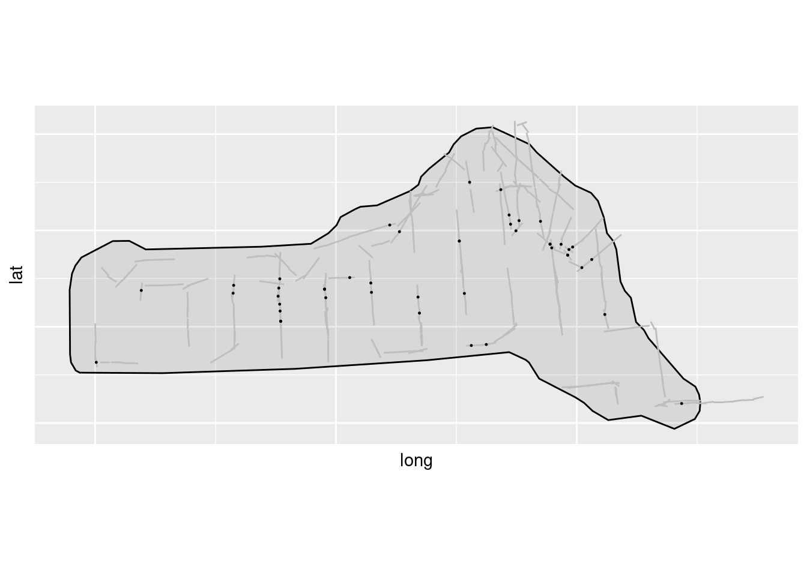
Spatial model with a half-normal detection function
The samplers in this dataset are lines, not polygons, so
we need to tell inlabru about the strip half-width,
W, which in the case of these data is 8. We start by
plotting the distances and histogram of frequencies in distance
intervals:
W <- 8
ggplot(data.frame(mexdolphin$points)) +
geom_histogram(aes(x = distance),
breaks = seq(0, W, length = 9),
boundary = 0, fill = NA, color = "black"
) +
geom_point(aes(x = distance), y = 0, pch = "|", cex = 4)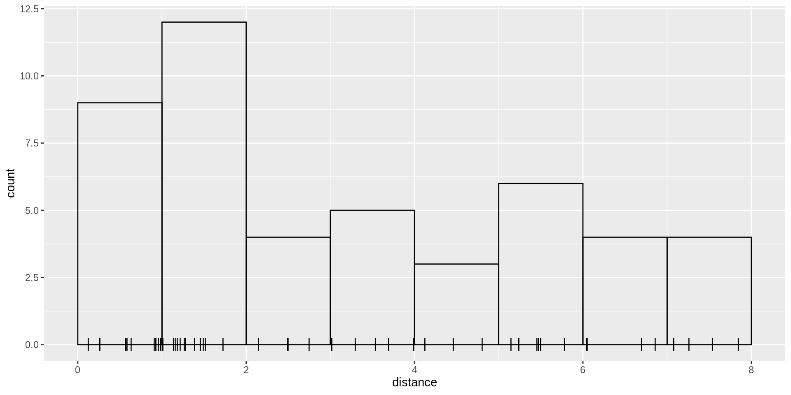
We need to define a half-normal detection probability function. This
must take distance as its first arguent and the linear predictor of the
sigma parameter (which we will call lsig) as its
second:
Specify and fit an SPDE model to these data using a half-normal detection function form. We need to define a (Matern) covariance function for the SPDE
matern <- inla.spde2.pcmatern(mexdolphin$mesh,
prior.sigma = c(2, 0.01),
prior.range = c(50, 0.01)
)We need to now separately define the components of the model (the
SPDE, the Intercept and the detection function parameter
lsig)
cmp <- ~ mySPDE(main = coordinates, model = matern) +
lsig(1) + Intercept(1)… and the formula, which describes how these components are combined to form the linear predictor (remembering that we need an offset due to the unknown direction of the detections!):
Then fit the model, passing both the components and the formula
(previously the formula was constructed invisibly by
inlabru), and specify integration domains for the spatial
and distance dimensions:
fit <- lgcp(
components = cmp,
mexdolphin$points,
samplers = mexdolphin$samplers,
domain = list(
coordinates = mesh,
distance = INLA::inla.mesh.1d(seq(0, 8, length.out = 30))
),
formula = form
)Look at the SPDE parameter posteriors
spde.range <- spde.posterior(fit, "mySPDE", what = "range")
plot(spde.range)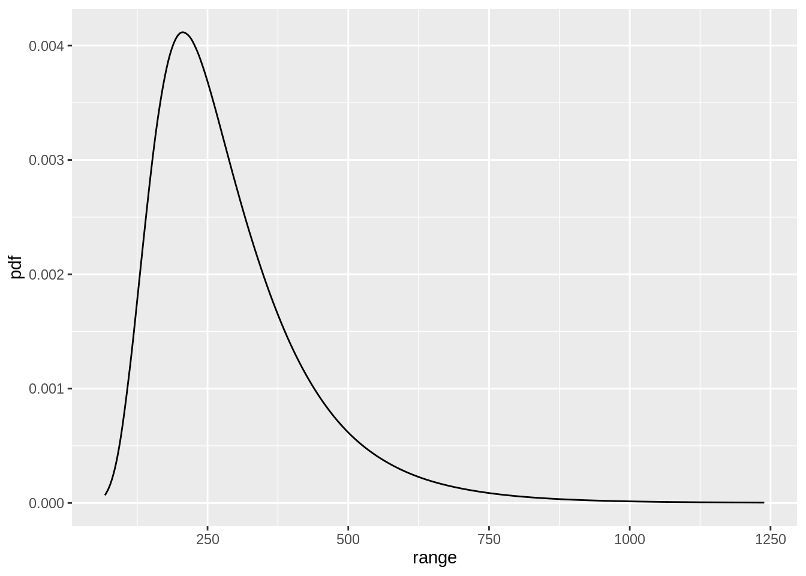
spde.logvar <- spde.posterior(fit, "mySPDE", what = "log.variance")
plot(spde.logvar)Predict spatial intensity, and plot it:
pxl <- pixels(mesh, nx = 100, ny = 50, mask = mexdolphin$ppoly)
pr.int <- predict(fit, pxl, ~ exp(mySPDE + Intercept))
ggplot() +
gg(pr.int) +
gg(mexdolphin$ppoly) +
gg(mexdolphin$samplers, color = "grey") +
gg(mexdolphin$points, size = 0.2, alpha = 1) +
noyticks +
noxticks +
theme(legend.key.width = unit(x = 0.2, "cm"), legend.key.height = unit(x = 0.3, "cm")) +
theme(legend.text = element_text(size = 6)) +
guides(fill = FALSE) +
coord_equal()
Predict the detection function and plot it, to generate a plot like
the one below. Here, we should make sure that it doesn’t try to evaluate
the effects of components that can’t be evaluated using the given input
data. Here, we’re only providing distances and no spatial coordinates,
so we cannot evaluate the spatial random field in this
predict() call. We can specify this by providing a vector
of component names to include in the prediction calculations, here only
“lsig”, with include = "lsig". See
?predict.bru for more information.
distdf <- data.frame(distance = seq(0, 8, length = 100))
dfun <- predict(fit, distdf, ~ hn(distance, lsig), include = "lsig")
plot(dfun)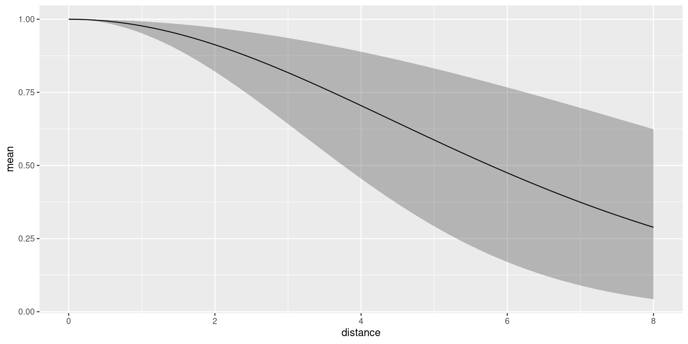 The average detection probability within the maximum detection distance is estimated to be 0.7014973.
We can look at the posterior for expected number of dolphins as usual:
predpts <- ipoints(mexdolphin$ppoly, mexdolphin$mesh)
Lambda <- predict(fit, predpts, ~ sum(weight * exp(mySPDE + Intercept)))
Lambda
#> mean sd q0.025 q0.5 q0.975 median mean.mc_std_err
#> 1 259.4448 48.69814 171.8907 258.807 350.298 258.807 4.869814
#> sd.mc_std_err
#> 1 3.308125and including the randomness about the expected number. In this case, it turns out that you need lots of posterior samples, e.g. 2,000 to smooth out the Monte Carlo error in the posterior, and this takes a little while to compute:
Ns <- seq(50, 450, by = 1)
Nest <- predict(fit, predpts,
~ data.frame(
N = Ns,
density = dpois(Ns,
lambda = sum(weight * exp(mySPDE + Intercept))
)
),
n.samples = 2000
)
Nest$plugin_estimate <- dpois(Nest$N, lambda = Lambda$mean)
ggplot(data = Nest) +
geom_line(aes(x = N, y = mean, colour = "Posterior")) +
geom_line(aes(x = N, y = plugin_estimate, colour = "Plugin"))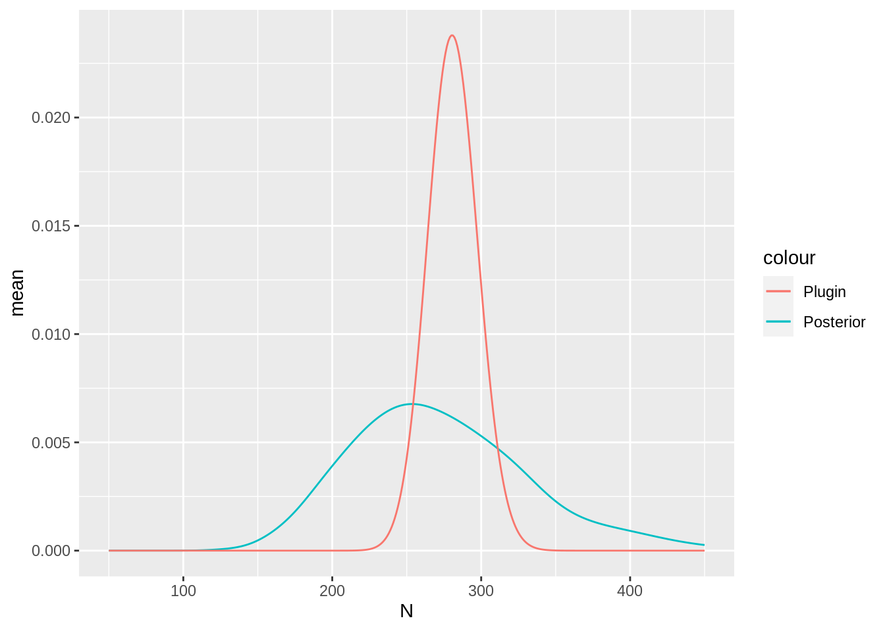
Hazard-rate Detection Function
Try doing this all again, but use this hazard-rate detection function model:
Solution:
formula1 <- coordinates + distance ~ mySPDE +
log(hr(distance, lsig)) +
Intercept + log(2)
fit1 <- lgcp(
components = cmp,
mexdolphin$points,
samplers = mexdolphin$samplers,
domain = list(
coordinates = mesh,
distance = INLA::inla.mesh.1d(seq(0, 8, length.out = 30))
),
formula = formula1
)Plots:
spde.range <- spde.posterior(fit1, "mySPDE", what = "range")
plot(spde.range)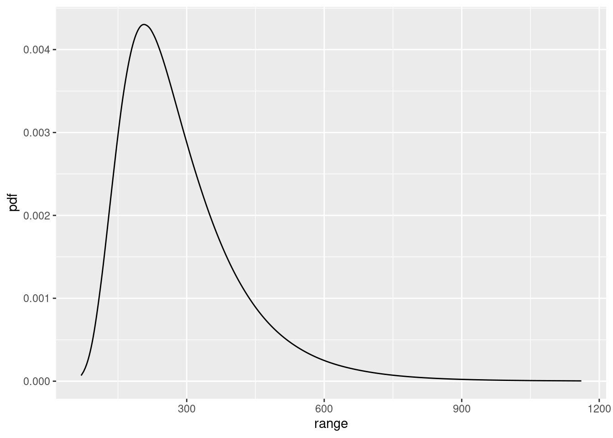
spde.logvar <- spde.posterior(fit1, "mySPDE", what = "log.variance")
plot(spde.logvar)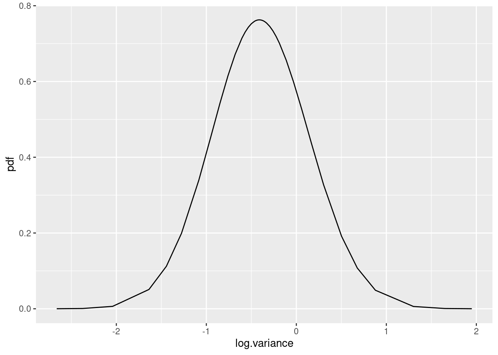
pxl <- pixels(mesh, nx = 100, ny = 50, mask = mexdolphin$ppoly)
pr.int1 <- predict(fit1, pxl, ~ exp(mySPDE + Intercept))
ggplot() +
gg(pr.int1) +
gg(mexdolphin$ppoly) +
gg(mexdolphin$samplers, color = "grey") +
gg(mexdolphin$points, size = 0.2, alpha = 1) +
noyticks +
noxticks +
theme(legend.key.width = unit(x = 0.2, "cm"), legend.key.height = unit(x = 0.3, "cm")) +
theme(legend.text = element_text(size = 6)) +
guides(fill = FALSE) +
coord_equal()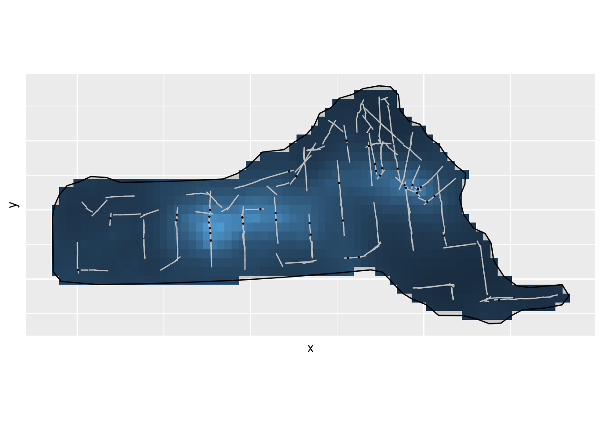
distdf <- data.frame(distance = seq(0, 8, length = 100))
dfun1 <- predict(fit1, distdf, ~ hr(distance, lsig))
plot(dfun1)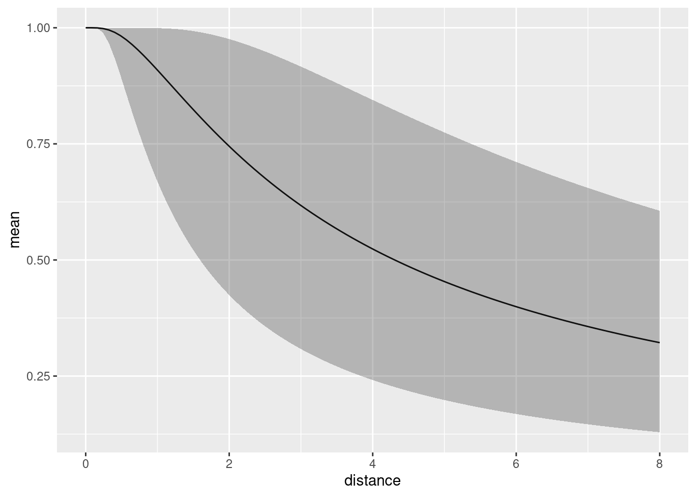
predpts <- ipoints(mexdolphin$ppoly, mexdolphin$mesh)
Lambda1 <- predict(fit1, predpts, ~ sum(weight * exp(mySPDE + Intercept)))
Lambda1
#> mean sd q0.025 q0.5 q0.975 median mean.mc_std_err
#> 1 310.7371 81.35357 170.4611 303.7496 499.5943 303.7496 8.135357
#> sd.mc_std_err
#> 1 6.260778
Ns <- seq(50, 650, by = 1)
Nest1 <- predict(
fit1,
predpts,
~ data.frame(
N = Ns,
density = dpois(Ns,
lambda = sum(weight * exp(mySPDE + Intercept))
)
),
n.samples = 2000
)
Nest1$plugin_estimate <- dpois(Nest1$N, lambda = Lambda1$mean)
ggplot(data = Nest1) +
geom_line(aes(x = N, y = mean, colour = "Posterior")) +
geom_line(aes(x = N, y = plugin_estimate, colour = "Plugin"))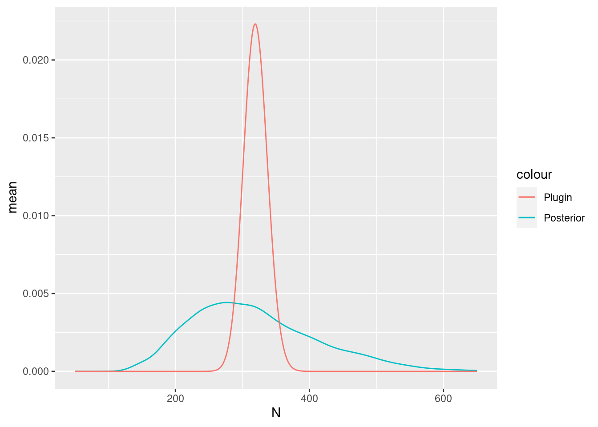
Comparing the models
deltaIC(fit1, fit)
#> Model DIC Delta.DIC
#> 1 fit -802.2352 0.000000
#> 2 fit1 -800.1403 2.094871
# Look at the goodness-of-fit of the two models in the distance dimension
bc <- bincount(
result = fit,
observations = mexdolphin$points$distance,
breaks = seq(0, max(mexdolphin$points$distance), length = 9),
predictor = distance ~ hn(distance, lsig)
)
attributes(bc)$ggp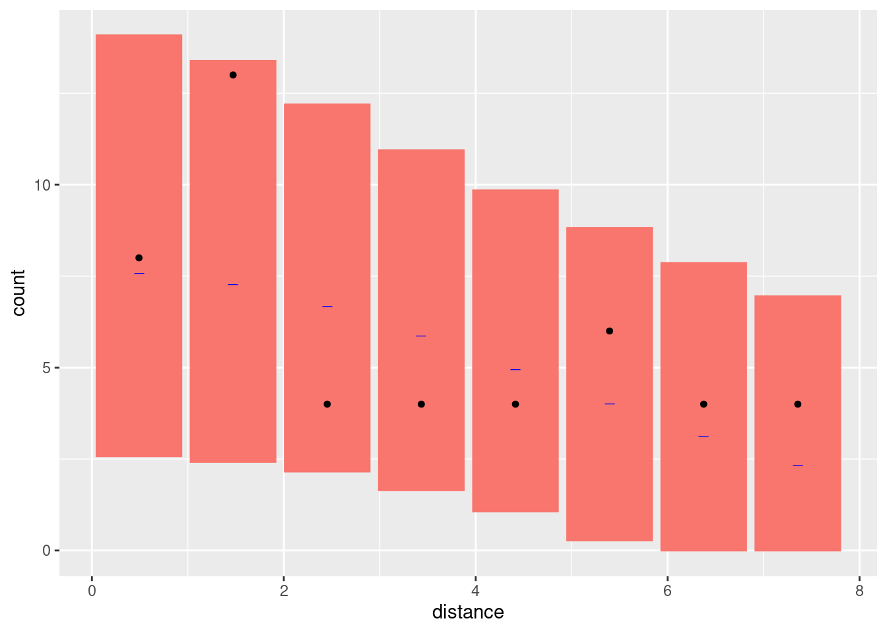
bc1 <- bincount(
result = fit1,
observations = mexdolphin$points$distance,
breaks = seq(0, max(mexdolphin$points$distance), length = 9),
predictor = distance ~ hn(distance, lsig)
)
attributes(bc1)$ggp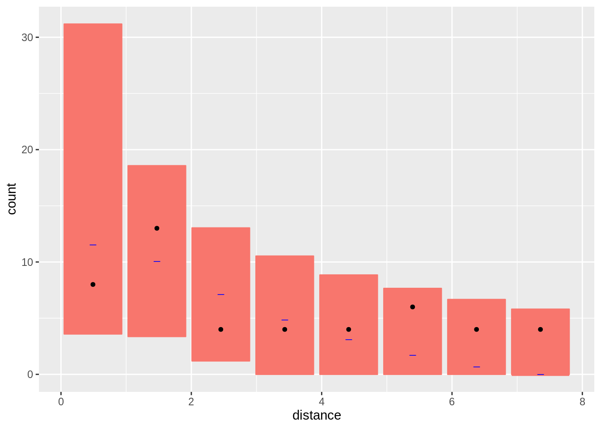
Fit Models only to the distance sampling data
Half-normal first
formula <- distance ~ log(hn(distance, lsig)) + Intercept
cmp <- ~ lsig(1) + Intercept(1)
dfit <- lgcp(
components = cmp,
mexdolphin$points,
domain = list(distance = INLA::inla.mesh.1d(seq(0, 8, length.out = 30))),
formula = formula,
options = list(bru_initial = list(lsig = 1, Intercept = 3))
)
detfun <- predict(dfit, distdf, ~ hn(distance, lsig))Half-normal next
formula1 <- distance ~ log(hr(distance, lsig)) + Intercept
cmp <- ~ lsig(1) + Intercept(1)
dfit1 <- lgcp(
components = cmp,
mexdolphin$points,
domain = list(distance = INLA::inla.mesh.1d(seq(0, 8, length.out = 30))),
formula = formula1
)
detfun1 <- predict(dfit1, distdf, ~ hr(distance, lsig))Compare detection function models by DIC:
deltaIC(dfit1, dfit)
#> Model DIC Delta.DIC
#> 1 dfit -8.626852 0.000000
#> 2 dfit1 -6.512819 2.114033Plot both lines on histogram of observations First scale lines to have same area as that of histogram Half-normal:
hnline <- data.frame(distance = detfun$distance, p = detfun$mean, lower = detfun$q0.025, upper = detfun$q0.975)
wts <- diff(hnline$distance)
wts[1] <- wts[1] / 2
wts <- c(wts, wts[1])
hnarea <- sum(wts * hnline$p)
n <- length(mexdolphin$points$distance)
scale <- n / hnarea
hnline$En <- hnline$p * scale
hnline$En.lower <- hnline$lower * scale
hnline$En.upper <- hnline$upper * scaleHazard-rate:
hrline <- data.frame(distance = detfun1$distance, p = detfun1$mean, lower = detfun1$q0.025, upper = detfun1$q0.975)
wts <- diff(hrline$distance)
wts[1] <- wts[1] / 2
wts <- c(wts, wts[1])
hrarea <- sum(wts * hrline$p)
n <- length(mexdolphin$points$distance)
scale <- n / hrarea
hrline$En <- hrline$p * scale
hrline$En.lower <- hrline$lower * scale
hrline$En.upper <- hrline$upper * scaleCombine lines in a single object for plotting
Plot without the 95% credible intervals
ggplot(data.frame(mexdolphin$points)) +
geom_histogram(aes(x = distance), breaks = seq(0, 8, length = 9), alpha = 0.3) +
geom_point(aes(x = distance), y = 0.2, shape = "|", size = 3) +
geom_line(data = dlines, aes(x = distance, y = En, group = model, col = model))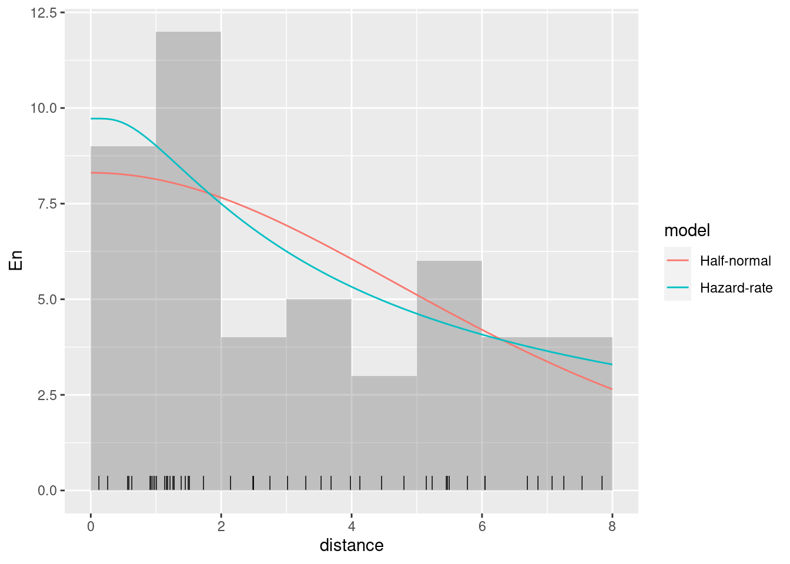
Plot with the 95% credible intervals (without taking the count rescaling into account)
ggplot(data.frame(mexdolphin$points)) +
geom_histogram(aes(x = distance), breaks = seq(0, 8, length = 9), alpha = 0.3) +
geom_point(aes(x = distance), y = 0.2, shape = "|", size = 3) +
geom_line(data = dlines, aes(x = distance, y = En, group = model, col = model)) +
geom_ribbon(
data = dlines, aes(x = distance, ymin = En.lower, ymax = En.upper, group = model, col = model, fill = model),
alpha = 0.2, lty = 2
)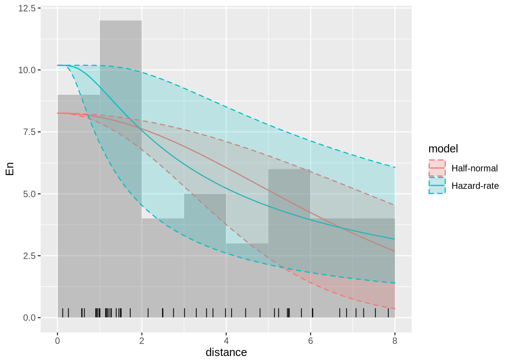